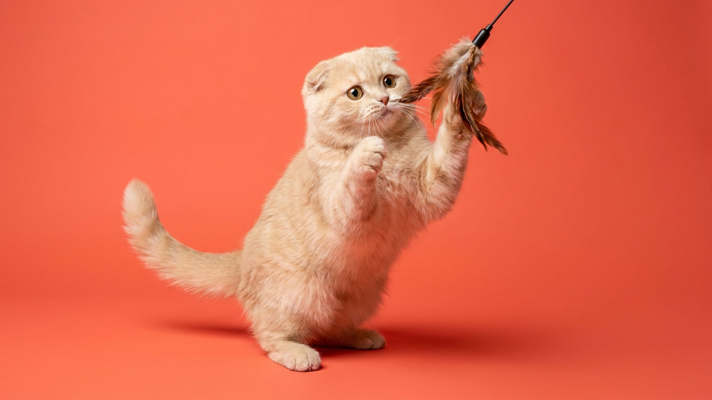

Люди путают скоттиш-страйт со скоттиш-фолдом и думают, что прямые уши — это «бракованный вислоухий». Это не так: скоттиш-страйт — самостоятельная разновидность шотландской породы с ровными ушами, полноценным здоровьем и характером, за который порода ценится. В этой статье — чем страйт отличается от фолда, каков его темперамент и что важно знать с первых дней.
🐾 Ваш питомец — скоттиш-страйт?
Заведите профиль в AnimaLife: приложение запомнит породу, возраст и вес и будет подсказывать по уходу именно для неё. Вопросы AI-ветеринару — круглосуточно и бесплатно.
Завести профиль → Завести в MAX →
У вас iPhone? AnimaLife есть в App Store
Скоттиш-фолд (вислоухий) и скоттиш-страйт — потомки одной породы. Ген загнутых ушей у фолда связан с мутацией, которая при определённых сочетаниях влияет на хрящевую ткань по всему телу. Именно поэтому добросовестные заводчики не вяжут фолда с фолдом: в помёте всегда рождаются котята как с загнутыми ушами (фолды), так и с прямыми (страйты).
Страйт — не «второй сорт». Он такой же шотландский и пользуется спросом у тех, кто ценит породу без рисков, связанных с геном фолда.
Порода ровная и предсказуемая — это главное, за что её любят семьи с детьми и занятые люди.
Голос у страйта тихий. Он не будет кричать с утра ради корма — скорее придёт и посмотрит выразительным взглядом.
Скоттиш-страйт бывает короткошёрстным и длинношёрстным (хайленд страйт). У короткошёрстного — плотная «плюшевая» шерсть, которая почти не сваливается в колтуны. Расчёсывать достаточно раз в неделю щёткой с частыми зубьями; в период линьки (весна, осень) — чаще.
Длинношёрстный хайленд страйт требует расчёсывания 2–3 раза в неделю, особенно за ушами и в подмышечных впадинах. Купание — по необходимости, примерно раз в 1–2 месяца.
Остальной уход стандартный: уши чистить раз в 1–2 недели (у страйта ушная раковина открытая, грязь накапливается чуть быстрее, чем у фолда), когти подстригать по мере отрастания.
Скоттиш-страйт в целом здоровее фолда — отсутствие двойного гена фолда избавляет от специфических ортопедических рисков породы. Тем не менее есть моменты, за которыми стоит следить:
🐾 У вас скоттиш-страйт?
AnimaLife соберёт уход под породу: к каким болезням есть склонность, что проверять по возрасту, чем кормить и когда пора к врачу. Бесплатно, прямо в мессенджере.
Собрать план ухода → Собрать в MAX →
У вас iPhone? AnimaLife есть в App Store
🐾 Понравился разбор?
Подпишитесь на канал — каждый день разбираем по одному тревожному симптому у кошек и собак: что в пределах нормы, а когда пора к врачу. Подпишитесь, чтобы не пропустить разбор, который может спасти здоровье вашего питомца.
Материал носит информационный характер и не заменяет очную консультацию ветеринара.